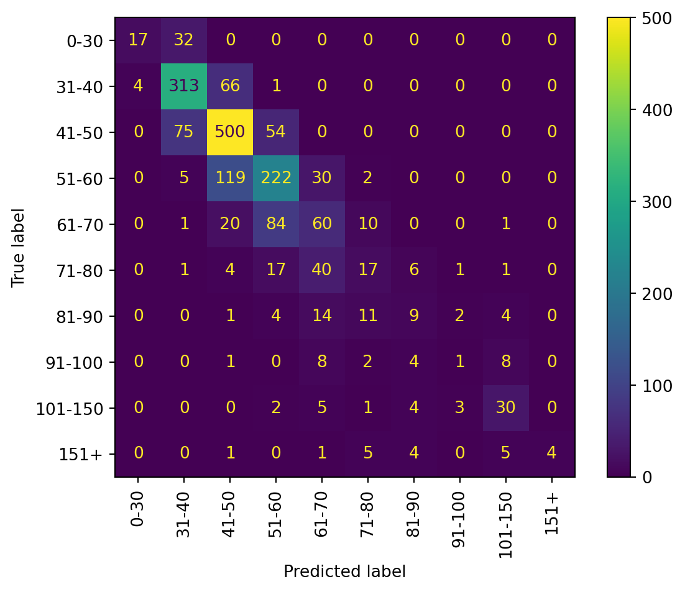

147039Machine Learning Model
Machine Learning using SKlearn
Ultimately, we want to see which variables have the greatest impact on AQI. To do this we must perform a machine learning analysis and create a prediction algorithm.
Starting by looking at the head to see all of our columns. Immediately, we can some missing data, which must be addressed before any machine learning algorithms can be conducted.
Import the Data
Here we can see all the missing data in each column. There are some very large numbers we must address. The entire dataset is only 147039 rows long. Some columnshave more than half the data missing.
yearly_transit_id 5114
category_id 3068
location_id 0
date_id 0
id 0
aqi 3068
mean_temperature_fahrenheit 61895
max_temperature_fahrenheit 61895
mean_pressure_millibars 91859
max_pressure_millibars 91859
mean_humidity_percent_relative_humidity 76818
max_humidity_percent_relative_humidity 76818
mean_wind_knots 58488
max_wind_knots 58488
mean_co_ppm 32615
max_co_ppm 32615
mean_no2_ppb 27747
max_no2_ppb 27747
mean_ozone_ppm 33163
max_ozone_ppm 33163
mean_so2_ppb 49291
max_so2_ppb 49291
mean_pm100_micrograms_per_cubic_meter 77281
max_pm100_micrograms_per_cubic_meter 77281
mean_pm25_micrograms_per_cubic_meter 37443
max_pm25_micrograms_per_cubic_meter 37443
mean_lead_micrograms_per_cubic_meter 138816
max_lead_micrograms_per_cubic_meter 138816
date 0
state 0
st_abbv 0
county 0
city 0
population 0
density 0
category 3068
aqi_range 3068
num_busses 5114
revenue 5844
operating_expense 5114
passenger_trips 5114
operating_hours 5114
passenger_miles 5114
operating_miles 5114
dtype: int64The first steps to addressing the missing data will be to drop the columns that will definitely not be needed. This includes the id columns used for joining within the SQL database, as well as the maximum columns as we already have the mean data. We also rename the columns to make it easier to understand and reference.
Now the missing data looks like this, it is a little better, but we can still do so much more.
date 0
state 0
county 0
city 0
population 0
density 0
aqi 3068
category 3068
temp 61895
pressure 91859
humidity 76818
wind_speed 58488
co 32615
no2 27747
o3 33163
so2 49291
pm100 77281
pm25 37443
lead 138816
num_busses 5114
revenue 5844
operating_expense 5114
passenger_trips 5114
operating_hours 5114
passenger_miles 5114
operating_miles 5114
dtype: int64We will group data by week. This will take an average count for the entire week for each variable for each city. This will eliminate any missing data that was not captured everyday, but only some days. For example, the pollutants (PM10 and PM2.5) were captured once every three days.
We can also see that the city Virginia Beach has almost no data, so it will be easiest to drop that city.
Next, since we will be measuring and predicting AQI, we will drop all rows missing AQI data.
Missing data is better, but there is still work to do.
date 0
state 0
county 0
city 0
population 0
density 0
aqi 0
temp 8199
pressure 12387
humidity 10318
wind_speed 7679
co 3900
no2 3250
o3 3964
so2 6315
pm100 4835
pm25 2055
num_busses 312
revenue 416
operating_expense 312
passenger_trips 312
operating_hours 312
passenger_miles 312
operating_miles 312
dtype: int64The data collected has separate information for the city of New York City. NYC is divided into five borroughs, each within its own county. We will group and average out these values to make NYC have the same amount of datapoints as every other city. This will also address data present in some New York borroughs but not others.
date state county city population density \
0 2015-01-04 New York Multiple New York City 18908608 11080.3
1 2015-01-11 New York Multiple New York City 18908608 11080.3
2 2015-01-18 New York Multiple New York City 18908608 11080.3
3 2015-01-25 New York Multiple New York City 18908608 11080.3
4 2015-02-01 New York Multiple New York City 18908608 11080.3
.. ... ... ... ... ... ...
413 2022-12-04 New York Multiple New York City 18908608 11080.3
414 2022-12-11 New York Multiple New York City 18908608 11080.3
415 2022-12-18 New York Multiple New York City 18908608 11080.3
416 2022-12-25 New York Multiple New York City 18908608 11080.3
417 2023-01-01 New York Multiple New York City 18908608 11080.3
aqi temp pressure humidity ... so2 pm100 \
0 49.450000 38.984375 1015.694425 63.076739 ... 2.011285 NaN
1 47.514286 23.241072 1019.509891 50.699404 ... 3.337455 NaN
2 56.000000 29.508929 1017.454363 65.954221 ... 3.034949 NaN
3 49.800000 34.836310 1008.855166 60.536141 ... 2.267468 NaN
4 44.342857 25.562500 1010.873006 63.099378 ... 2.640521 NaN
.. ... ... ... ... ... ... ...
413 29.657143 NaN NaN NaN ... 0.437256 5.333334
414 34.742857 NaN NaN NaN ... 0.517050 11.666667
415 27.600000 NaN NaN NaN ... 0.507095 9.333333
416 38.000000 NaN NaN NaN ... 0.837313 8.000000
417 59.566667 NaN NaN NaN ... 1.217373 22.666666
pm25 num_busses revenue operating_expense passenger_trips \
0 7.781642 22195.0 5.427129e+09 1.656689e+10 4.350768e+09
1 8.393517 22195.0 5.427129e+09 1.656689e+10 4.350768e+09
2 13.683131 22195.0 5.427129e+09 1.656689e+10 4.350768e+09
3 10.417719 22195.0 5.427129e+09 1.656689e+10 4.350768e+09
4 7.102983 22195.0 5.427129e+09 1.656689e+10 4.350768e+09
.. ... ... ... ... ...
413 4.959028 5735.0 8.183201e+08 3.981827e+09 5.032214e+08
414 7.456925 5735.0 8.183201e+08 3.981827e+09 5.032214e+08
415 4.837290 5735.0 8.183201e+08 3.981827e+09 5.032214e+08
416 7.295255 5735.0 8.183201e+08 3.981827e+09 5.032214e+08
417 17.720097 5735.0 8.183201e+08 3.981827e+09 5.032214e+08
operating_hours passenger_miles operating_miles
0 77805045.0 9.676463e+09 577333420.0
1 77805045.0 9.676463e+09 577333420.0
2 77805045.0 9.676463e+09 577333420.0
3 77805045.0 9.676463e+09 577333420.0
4 77805045.0 9.676463e+09 577333420.0
.. ... ... ...
413 16852360.0 1.446845e+09 130602200.0
414 16852360.0 1.446845e+09 130602200.0
415 16852360.0 1.446845e+09 130602200.0
416 16852360.0 1.446845e+09 130602200.0
417 16852360.0 1.446845e+09 130602200.0
[418 rows x 24 columns]Additionally, Kansas City is located in two states, and thus in two counties. We will do the same thing to contract and standardize the data.
After doing this, we drop the rest of the rows with missing data, leaving us with a total of 17 cities with metropolitan area populations greater than one million.
| city | count | |
|---|---|---|
| 0 | Boston | 418 |
| 1 | Charlotte | 418 |
| 2 | Cincinnati | 418 |
| 3 | Cleveland | 418 |
| 4 | Dallas | 418 |
| 5 | Detroit | 418 |
| 6 | Houston | 418 |
| 7 | Kansas City | 241 |
| 8 | Los Angeles | 418 |
| 9 | Memphis | 418 |
| 10 | New York City | 418 |
| 11 | Phoenix | 418 |
| 12 | Pittsburgh | 418 |
| 13 | Portland | 418 |
| 14 | Raleigh | 418 |
| 15 | Seattle | 418 |
| 16 | St. Louis | 418 |
| 17 | Washington | 418 |
To perform a ML prediction algorithm, the predicted variable (AQI) must be discrete. To achieve this, we bin AQI data into discrete groups. Initially, we thought to bin them based on the existing AQI categories, but found that most of the data is grouped in the sub 100 range. Therefore, we expanded the bins, focusing the prediction on outcomes in the double digits. The bins chosen are shown below:
| date | state | county | city | population | density | aqi | temp | pressure | humidity | ... | pm100 | pm25 | num_busses | revenue | operating_expense | passenger_trips | operating_hours | passenger_miles | operating_miles | aqi_discrete | |
|---|---|---|---|---|---|---|---|---|---|---|---|---|---|---|---|---|---|---|---|---|---|
| 0 | 2015-01-04 | Arizona | Maricopa | Phoenix | 4064275 | 1198.9 | 86.50 | 41.458333 | 972.860814 | 60.739583 | ... | 20.709822 | 20.505426 | 729.0 | 47024975.0 | 2.256208e+08 | 55497019.0 | 2228182.0 | 2.190928e+08 | 28371107.0 | 81-90 |
| 1 | 2015-01-04 | California | Los Angeles | Los Angeles | 11922389 | 3184.7 | 118.50 | 50.281250 | 1010.666650 | 58.177084 | ... | 24.954331 | 21.400000 | 2259.0 | 273158938.0 | 1.056348e+09 | 367104774.0 | 7938548.0 | 1.448619e+09 | 84041668.0 | 101-150 |
| 7 | 2015-01-04 | District Of Columbia | District of Columbia | Washington | 5116378 | 4235.7 | 45.25 | 41.149479 | 1015.388525 | 61.075000 | ... | 13.750000 | 11.088055 | 1394.0 | 149657899.0 | 6.453259e+08 | 139353079.0 | 4115200.0 | 4.293390e+08 | 39643319.0 | 41-50 |
| 17 | 2015-01-04 | Massachusetts | Suffolk | Boston | 4328315 | 5319.0 | 42.75 | 33.458332 | 1018.536500 | 58.234375 | ... | 6.000000 | 7.244791 | 800.0 | 96572664.0 | 4.080501e+08 | 122496729.0 | 2231562.0 | 3.162285e+08 | 22115804.0 | 41-50 |
| 18 | 2015-01-04 | Michigan | Wayne | Detroit | 3725908 | 1772.2 | 49.25 | 30.203125 | 994.260400 | 72.671876 | ... | 18.250000 | 9.394618 | 432.0 | 31303313.0 | 1.729056e+08 | 33078462.0 | 1225079.0 | 1.696881e+08 | 17705665.0 | 41-50 |
5 rows × 25 columns
| date | state | county | city | population | density | aqi | temp | pressure | humidity | ... | pm100 | pm25 | num_busses | revenue | operating_expense | passenger_trips | operating_hours | passenger_miles | operating_miles | aqi_discrete | |
|---|---|---|---|---|---|---|---|---|---|---|---|---|---|---|---|---|---|---|---|---|---|
| 0 | 2015-01-04 | Arizona | Maricopa | Phoenix | 4064275 | 1198.9 | 86.50 | 41.458333 | 972.860814 | 60.739583 | ... | 20.709822 | 20.505426 | 729.0 | 47024975.0 | 2.256208e+08 | 55497019.0 | 2228182.0 | 2.190928e+08 | 28371107.0 | 81-90 |
| 1 | 2015-01-04 | California | Los Angeles | Los Angeles | 11922389 | 3184.7 | 118.50 | 50.281250 | 1010.666650 | 58.177084 | ... | 24.954331 | 21.400000 | 2259.0 | 273158938.0 | 1.056348e+09 | 367104774.0 | 7938548.0 | 1.448619e+09 | 84041668.0 | 101-150 |
| 7 | 2015-01-04 | District Of Columbia | District of Columbia | Washington | 5116378 | 4235.7 | 45.25 | 41.149479 | 1015.388525 | 61.075000 | ... | 13.750000 | 11.088055 | 1394.0 | 149657899.0 | 6.453259e+08 | 139353079.0 | 4115200.0 | 4.293390e+08 | 39643319.0 | 41-50 |
| 17 | 2015-01-04 | Massachusetts | Suffolk | Boston | 4328315 | 5319.0 | 42.75 | 33.458332 | 1018.536500 | 58.234375 | ... | 6.000000 | 7.244791 | 800.0 | 96572664.0 | 4.080501e+08 | 122496729.0 | 2231562.0 | 3.162285e+08 | 22115804.0 | 41-50 |
| 18 | 2015-01-04 | Michigan | Wayne | Detroit | 3725908 | 1772.2 | 49.25 | 30.203125 | 994.260400 | 72.671876 | ... | 18.250000 | 9.394618 | 432.0 | 31303313.0 | 1.729056e+08 | 33078462.0 | 1225079.0 | 1.696881e+08 | 17705665.0 | 41-50 |
5 rows × 25 columns
To set up the ML prediction, we must specify the variable being predicted (aqi_discrete, the aqi separated into bins), and the independent prediction variables. We will use a feature selector to select the most accurate predictors to try to optimize the model. Therefore, we initially choose every other variable to be our independent variables.
We must split the data into training and testing datasets. We also define an encoder to transform the discrete predictors into many binary variables for each category.
A transformer is used to quickly transform variables into the necessary form for modeling.
Definition 1
ColumnTransformer(transformers=[('categories',
OneHotEncoder(handle_unknown='infrequent_if_exist',
min_frequency=5,
sparse_output=False),
['city', 'year', 'month']),
('scaled_air_quality', StandardScaler(),
['population', 'density', 'temp', 'pressure',
'humidity', 'wind_speed', 'co', 'no2', 'o3',
'so2', 'pm100', 'pm25', 'num_busses',
'revenue', 'operating_expense',
'passenger_trips', 'operating_hours',
'passenger_miles', 'operating_miles'])],
verbose_feature_names_out=False)In a Jupyter environment, please rerun this cell to show the HTML representation or trust the notebook. On GitHub, the HTML representation is unable to render, please try loading this page with nbviewer.org.
ColumnTransformer(transformers=[('categories',
OneHotEncoder(handle_unknown='infrequent_if_exist',
min_frequency=5,
sparse_output=False),
['city', 'year', 'month']),
('scaled_air_quality', StandardScaler(),
['population', 'density', 'temp', 'pressure',
'humidity', 'wind_speed', 'co', 'no2', 'o3',
'so2', 'pm100', 'pm25', 'num_busses',
'revenue', 'operating_expense',
'passenger_trips', 'operating_hours',
'passenger_miles', 'operating_miles'])],
verbose_feature_names_out=False)['city', 'year', 'month']
OneHotEncoder(handle_unknown='infrequent_if_exist', min_frequency=5,
sparse_output=False)['population', 'density', 'temp', 'pressure', 'humidity', 'wind_speed', 'co', 'no2', 'o3', 'so2', 'pm100', 'pm25', 'num_busses', 'revenue', 'operating_expense', 'passenger_trips', 'operating_hours', 'passenger_miles', 'operating_miles']
StandardScaler()
Feature selection is done on the data. From this we are given the following variables: City, Temperature, Humidity, Carbon Monoxide, Nitrogen Dioxide, Ozone, PM10, and PM2.5.
Index(['city_Los Angeles', 'city_Phoenix', 'city_Portland', 'temp', 'humidity',
'co', 'no2', 'o3', 'pm100', 'pm25'],
dtype='object')Using these selected features, we will run our models.
We will test various models with default parameters to see which is the most accurate at predicting AQI from this dataset. The five models selected are: K nearest neighbors, Tree model, Random Forest model, Logistic Regression, and Naive Bayes.Running the models shows us that the Random Forest model is the most accurate.
Model: KNN
Cohen Kappa Score: 0.27968217934165707
Accuracy: 0.4518236254763201
Model: Tree
Cohen Kappa Score: 0.38948572170948237
Accuracy: 0.5209580838323353
Model: Random Forest
Cohen Kappa Score: 0.4811754974115705
Accuracy: 0.6020685900925422
Model: Logistic
Cohen Kappa Score: 0.31228619929444534
Accuracy: 0.48557430593358736
Model: naive Bayes
Cohen Kappa Score: 0.003824544630551596
Accuracy: 0.04899292324442025
Running a basic Random Forest model gives us the following cohen kappa score and accuracy. This will serve as the baseline to be compared to.
cohen kappa score: 0.49484404104036583
accuracy: 0.61295590636908We will further simplify this with a transformer to be used in a pipeline.
Pipeline(steps=[('aqi_transformer',
ColumnTransformer(transformers=[('categories',
OneHotEncoder(handle_unknown='infrequent_if_exist',
min_frequency=5,
sparse_output=False),
['city']),
('scaled_air_quality',
StandardScaler(),
['temp', 'humidity', 'co',
'no2', 'o3', 'pm100',
'pm25'])],
verbose_feature_names_out=False)),
('RF_model', RandomForestClassifier())])In a Jupyter environment, please rerun this cell to show the HTML representation or trust the notebook. On GitHub, the HTML representation is unable to render, please try loading this page with nbviewer.org.
Pipeline(steps=[('aqi_transformer',
ColumnTransformer(transformers=[('categories',
OneHotEncoder(handle_unknown='infrequent_if_exist',
min_frequency=5,
sparse_output=False),
['city']),
('scaled_air_quality',
StandardScaler(),
['temp', 'humidity', 'co',
'no2', 'o3', 'pm100',
'pm25'])],
verbose_feature_names_out=False)),
('RF_model', RandomForestClassifier())])ColumnTransformer(transformers=[('categories',
OneHotEncoder(handle_unknown='infrequent_if_exist',
min_frequency=5,
sparse_output=False),
['city']),
('scaled_air_quality', StandardScaler(),
['temp', 'humidity', 'co', 'no2', 'o3',
'pm100', 'pm25'])],
verbose_feature_names_out=False)['city']
OneHotEncoder(handle_unknown='infrequent_if_exist', min_frequency=5,
sparse_output=False)['temp', 'humidity', 'co', 'no2', 'o3', 'pm100', 'pm25']
StandardScaler()
RandomForestClassifier()
Next we will optimize hyperparameters to make the model more accurate.
{'memory': None,
'steps': [('aqi_transformer',
ColumnTransformer(transformers=[('categories',
OneHotEncoder(handle_unknown='infrequent_if_exist',
min_frequency=5,
sparse_output=False),
['city']),
('scaled_air_quality', StandardScaler(),
['temp', 'humidity', 'co', 'no2', 'o3',
'pm100', 'pm25'])],
verbose_feature_names_out=False)),
('RF_model', RandomForestClassifier())],
'verbose': False,
'aqi_transformer': ColumnTransformer(transformers=[('categories',
OneHotEncoder(handle_unknown='infrequent_if_exist',
min_frequency=5,
sparse_output=False),
['city']),
('scaled_air_quality', StandardScaler(),
['temp', 'humidity', 'co', 'no2', 'o3',
'pm100', 'pm25'])],
verbose_feature_names_out=False),
'RF_model': RandomForestClassifier(),
'aqi_transformer__n_jobs': None,
'aqi_transformer__remainder': 'drop',
'aqi_transformer__sparse_threshold': 0.3,
'aqi_transformer__transformer_weights': None,
'aqi_transformer__transformers': [('categories',
OneHotEncoder(handle_unknown='infrequent_if_exist', min_frequency=5,
sparse_output=False),
['city']),
('scaled_air_quality',
StandardScaler(),
['temp', 'humidity', 'co', 'no2', 'o3', 'pm100', 'pm25'])],
'aqi_transformer__verbose': False,
'aqi_transformer__verbose_feature_names_out': False,
'aqi_transformer__categories': OneHotEncoder(handle_unknown='infrequent_if_exist', min_frequency=5,
sparse_output=False),
'aqi_transformer__scaled_air_quality': StandardScaler(),
'aqi_transformer__categories__categories': 'auto',
'aqi_transformer__categories__drop': None,
'aqi_transformer__categories__dtype': numpy.float64,
'aqi_transformer__categories__feature_name_combiner': 'concat',
'aqi_transformer__categories__handle_unknown': 'infrequent_if_exist',
'aqi_transformer__categories__max_categories': None,
'aqi_transformer__categories__min_frequency': 5,
'aqi_transformer__categories__sparse_output': False,
'aqi_transformer__scaled_air_quality__copy': True,
'aqi_transformer__scaled_air_quality__with_mean': True,
'aqi_transformer__scaled_air_quality__with_std': True,
'RF_model__bootstrap': True,
'RF_model__ccp_alpha': 0.0,
'RF_model__class_weight': None,
'RF_model__criterion': 'gini',
'RF_model__max_depth': None,
'RF_model__max_features': 'sqrt',
'RF_model__max_leaf_nodes': None,
'RF_model__max_samples': None,
'RF_model__min_impurity_decrease': 0.0,
'RF_model__min_samples_leaf': 1,
'RF_model__min_samples_split': 2,
'RF_model__min_weight_fraction_leaf': 0.0,
'RF_model__monotonic_cst': None,
'RF_model__n_estimators': 100,
'RF_model__n_jobs': None,
'RF_model__oob_score': False,
'RF_model__random_state': None,
'RF_model__verbose': 0,
'RF_model__warm_start': False}The following parameters are selected, each with a range of possible values. A large 100 iterations are run to find the highest score.
Definition 2
0.6234119782214156We can see which hyperparameters are selected.
{'memory': None,
'steps': [('aqi_transformer',
ColumnTransformer(transformers=[('categories',
OneHotEncoder(handle_unknown='infrequent_if_exist',
max_categories=28,
min_frequency=18,
sparse_output=False),
['city']),
('scaled_air_quality', StandardScaler(),
['temp', 'humidity', 'co', 'no2', 'o3',
'pm100', 'pm25'])],
verbose_feature_names_out=False)),
('RF_model',
RandomForestClassifier(bootstrap=False, max_depth=14, max_features='log2',
min_samples_leaf=2, min_samples_split=4,
n_estimators=66))],
'verbose': False,
'aqi_transformer': ColumnTransformer(transformers=[('categories',
OneHotEncoder(handle_unknown='infrequent_if_exist',
max_categories=28,
min_frequency=18,
sparse_output=False),
['city']),
('scaled_air_quality', StandardScaler(),
['temp', 'humidity', 'co', 'no2', 'o3',
'pm100', 'pm25'])],
verbose_feature_names_out=False),
'RF_model': RandomForestClassifier(bootstrap=False, max_depth=14, max_features='log2',
min_samples_leaf=2, min_samples_split=4,
n_estimators=66),
'aqi_transformer__n_jobs': None,
'aqi_transformer__remainder': 'drop',
'aqi_transformer__sparse_threshold': 0.3,
'aqi_transformer__transformer_weights': None,
'aqi_transformer__transformers': [('categories',
OneHotEncoder(handle_unknown='infrequent_if_exist', max_categories=28,
min_frequency=18, sparse_output=False),
['city']),
('scaled_air_quality',
StandardScaler(),
['temp', 'humidity', 'co', 'no2', 'o3', 'pm100', 'pm25'])],
'aqi_transformer__verbose': False,
'aqi_transformer__verbose_feature_names_out': False,
'aqi_transformer__categories': OneHotEncoder(handle_unknown='infrequent_if_exist', max_categories=28,
min_frequency=18, sparse_output=False),
'aqi_transformer__scaled_air_quality': StandardScaler(),
'aqi_transformer__categories__categories': 'auto',
'aqi_transformer__categories__drop': None,
'aqi_transformer__categories__dtype': numpy.float64,
'aqi_transformer__categories__feature_name_combiner': 'concat',
'aqi_transformer__categories__handle_unknown': 'infrequent_if_exist',
'aqi_transformer__categories__max_categories': 28,
'aqi_transformer__categories__min_frequency': 18,
'aqi_transformer__categories__sparse_output': False,
'aqi_transformer__scaled_air_quality__copy': True,
'aqi_transformer__scaled_air_quality__with_mean': True,
'aqi_transformer__scaled_air_quality__with_std': True,
'RF_model__bootstrap': False,
'RF_model__ccp_alpha': 0.0,
'RF_model__class_weight': None,
'RF_model__criterion': 'gini',
'RF_model__max_depth': 14,
'RF_model__max_features': 'log2',
'RF_model__max_leaf_nodes': None,
'RF_model__max_samples': None,
'RF_model__min_impurity_decrease': 0.0,
'RF_model__min_samples_leaf': 2,
'RF_model__min_samples_split': 4,
'RF_model__min_weight_fraction_leaf': 0.0,
'RF_model__monotonic_cst': None,
'RF_model__n_estimators': 66,
'RF_model__n_jobs': None,
'RF_model__oob_score': False,
'RF_model__random_state': None,
'RF_model__verbose': 0,
'RF_model__warm_start': False}Using these hyperparameters, we reach an accuracy of about 63%.
cohen kappa score: 0.521931603333462
accuracy: 0.6363636363636364
We can use this model for the prediction of AQI, exploring the features that predict it, and use that to generate conclusions for what particles to reduce or systems to increase.